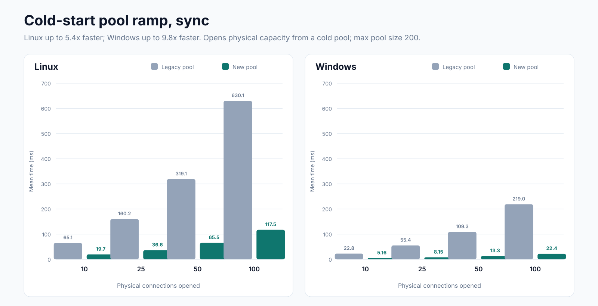
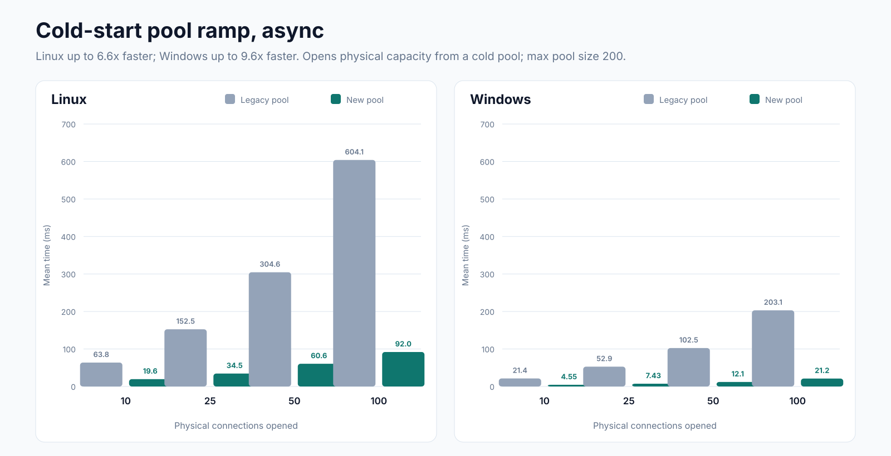
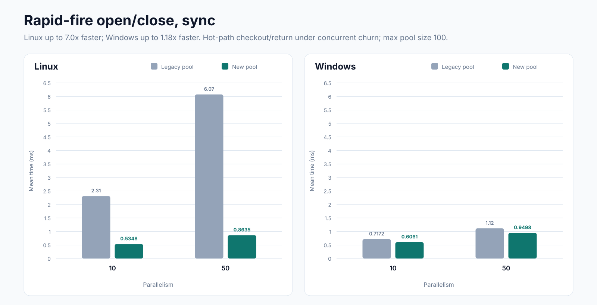
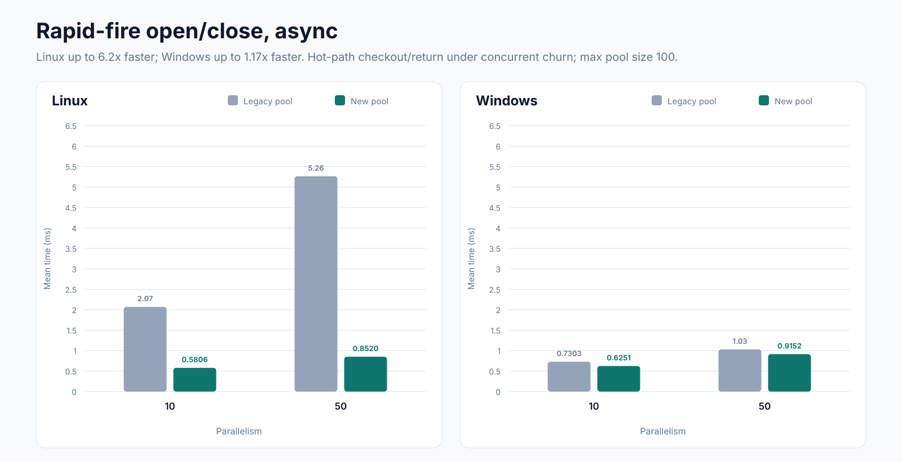
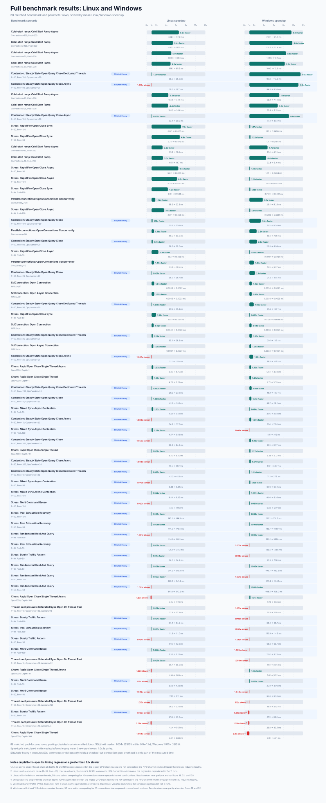

Connection Pool Performance: Legacy vs. New on Linux and Windows





Click any graph to open its full-resolution SVG.
Methodology and test coverage
Comparison method
- Linux and Windows used the same 68 benchmark and parameter rows.
Each platform ran the same Release build in separate processes with
UseConnectionPoolV2=falsefor the legacy pool andtruefor the new channel pool. - Benchmark units were interleaved legacy then new, back to back on the same host and reserved CPU set, to reduce machine-state drift.
- BenchmarkDotNet used the in-process MediumRun job targeting
net9.0, Server GC, MemoryDiagnoser, and ThreadingDiagnoser. Benchmark-specific iteration and warmup counts came from the runner config. - A slowdown above 10% was rerun across three total passes and marked confirmed only when it reproduced in a strict majority.
- Speedup is calculated within each platform as legacy mean divided by new-pool mean; 1.0x is parity. Absolute milliseconds should not be compared across Linux and Windows because they are separate machine runs.
Perf lab environment
- Platforms
- Separate Linux and Windows client runs in the internal SqlClient performance lab on Azure Dedicated Hosts.
- Windows run
- Azure DevOps build 170431.
- Linux run
- The previously supplied Linux comparison using the matching parameter matrix.
- CPU isolation
- The harness pins the benchmark client and SQL Server to disjoint CPU sets supplied by the perf-lab template.
- Runtime
net9.0, Release configuration, Server GC.- SQL Server
- The perf-lab SQL instance and
sqlclient-perf-dbdatabase. Each build records the exact CPU topology, SQL version, MAXDOP, memory, affinity, and tempdb layout in its diagnostics artifact.
What each pool benchmark measures
| Benchmark | Parameters in this run | Measured workload |
|---|---|---|
ColdStartRamp / ColdStartRampAsync | Connections 10/25/50/100; max pool 200 | Clears the pool, opens the requested number of physical connections, and holds each until all callers connect. Measures cold startup and scale-out; sync uses dedicated threads and async uses tasks. |
RapidFireOpenCloseSync / Async | Parallelism 10/50; max pool 50/100 | Uses a fully pre-warmed pool and repeatedly checks connections out and returns them immediately. This is a zero-hold-time worst case for the hot acquire/return and waiter handoff paths. |
RapidOpenCloseSingleThread / Async | 1000 operations; pool depths 1/10/100 | Runs repeated checkout/return on one caller with no contention. Isolates per-operation pool overhead and the reuse-locality difference between LIFO and FIFO idle-connection ordering. |
SteadyStateOpenQueryClose variants | Parallelism 50; max pool 10/25/50/100/200; 20 operations/worker | Uses a pre-warmed pool for open, SELECT 1, and close loops. Pool sizes above, equal to, and below demand separate hot-path throughput from waiter back-pressure; variants use sync, async, or dedicated threads. |
SaturatedSyncOpenOnThreadPool | Parallelism 50; pool 10; worker floors 4/16/32/128 | Runs blocking Open calls on thread-pool threads against a saturated pool. Sweeping the minimum worker count exposes continuation starvation and thread-injection sensitivity. |
RandomizedHoldAndQuery | Parallelism 10/50; max pool 50/100 | Holds each checkout for a random 0-50 ms and executes a small query about half the time. Represents mixed application hold times. |
MixedSyncAsyncContention | Parallelism 10/50; max pool 50/100 | Splits workers between sync and async open/query/close loops to exercise both checkout paths against the same pool. |
MultiCommandReuse | Parallelism 10/50; max pool 50/100 | Checks out once per worker and executes 5-15 sequential commands before returning the connection. Models multi-step ORM or unit-of-work usage. |
PoolExhaustionRecovery | Parallelism 10/50; max pool 50/100 | Starts at least twice as many tasks as the pool can serve, runs a query, and holds connections for 10-100 ms. Measures queued-waiter back-pressure and recovery. |
BurstyTrafficPattern | Parallelism 10/50; max pool 50/100 | Runs five waves of concurrent checkouts, each executing 1-5 queries, with a short pause between waves. Models clustered request traffic. |
OpenConnectionsConcurrently | Concurrent opens 10/50/100; pooling enabled | Starts many OpenAsync calls together and disposes each connection after it opens. Measures concurrent connection acquisition with pooling enabled. |
OpenConnection / OpenAsyncConnection | Pooling enabled; MARS on/off | Measures the basic sync and async pooled-open API path for a single connection, with and without Multiple Active Result Sets. |